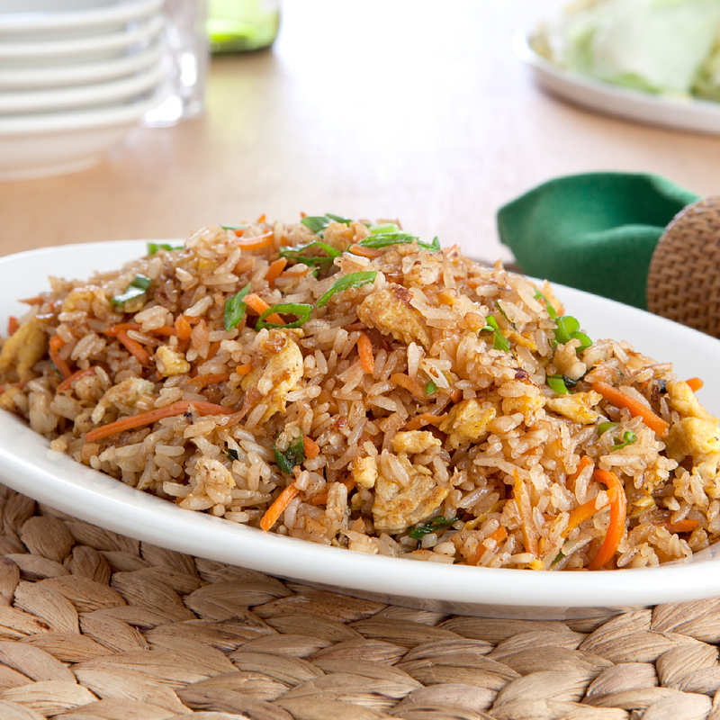

Chicken Fried Rice Recipe

Description
Chicken fried rice is the comfort dish of Chinese food. It's been around for a very long time and is also common in East, Southeast, and South Asian cuisines. The dish started as way to use leftover fried rice that has dried out some and may not be great on its own, but is still perfectly edible. The addition of oil and soy sauce and veggies and meat spruce up the rice for a delicious meal.
Ingredients
- 1 egg
- 1 tablespoon water
- 1 tablespoon butter
- 1 tablespoon vegetable oil
- 1 onion, chopped
- 2 cups cooked white rice, cold
- 1 cup cooked, chopped chicken meat
- 2 tablespoons soy sauce
- 1 teaspoon ground black pepper
Steps
- Prep the ingredients: Making fried rice is fast, so have all of your ingredients ready and by the stove. Dice your chicken into small cubes and salt it, whisk the egg, make sure all the veggies are diced and ready to go.
- Scramble the egg, then remove it from the pan. You want to cook the egg first so that it doesn't end up overcooking and so that the egg stays in larger pieces.
- Stir fry the chicken, then it remove it from the pan, too. Make sure it's cooked all the way through.
- Cook the vegetables, but leave them IN the pan!
- Add the rice, season it, then add the egg and chicken back to the pan.
- Serve hot!